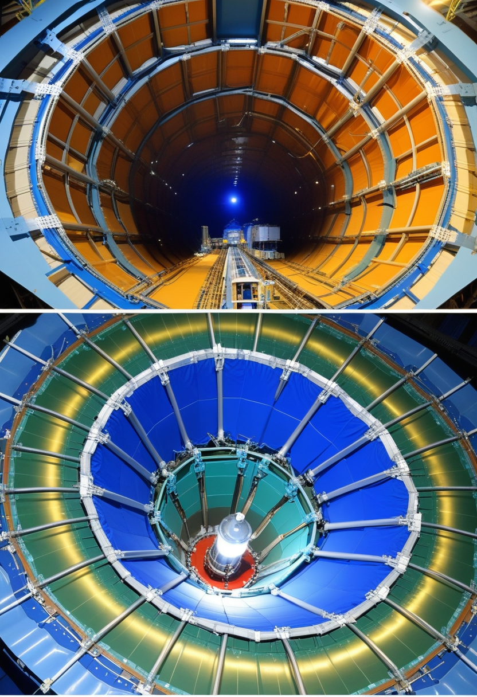
水曜日の便り。本日2026年7月1日、CERNのLarge Hadron ColliderがRun 3を終えLS3（第3次長期停止）に入り、2030年の高輝度HL-LHC再稼働へ向けた4年間の改修が始まった。エボラDRC（ブンディブギョ型）は6月29日に第4州Haut-Uéléへの拡散が確認され、PHEIC下の地理的封じ込めに新たな亀裂。SMAではアピテグロマブのPDUFA日（9/30）が確定し、BCIではSynchronの内血管デバイスが視線サッカードのデコードに世界初成功した。物理学の夏休みと生命科学の加速が交差する水曜日の朝。
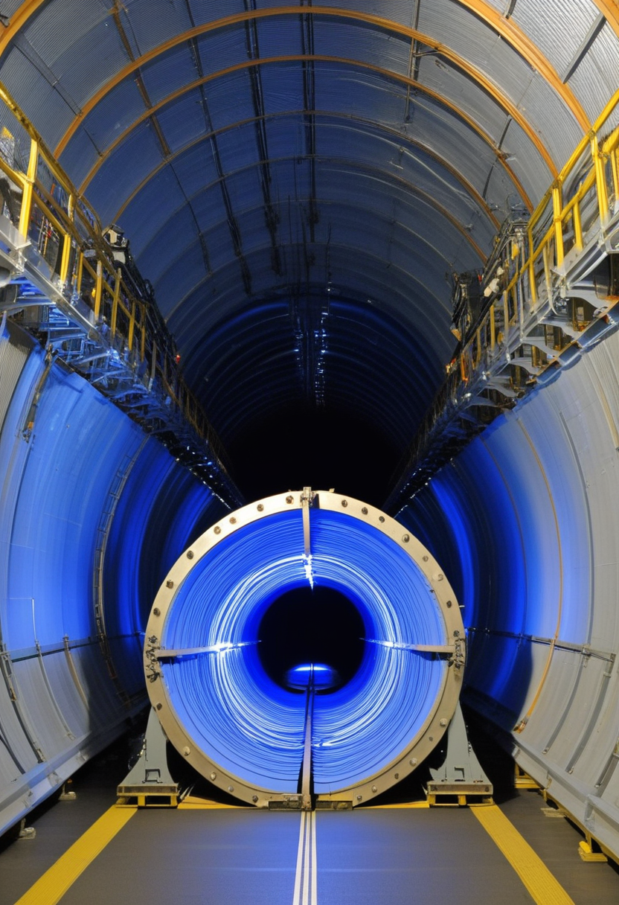
2026年6月29日、CERNのLarge Hadron Collider（LHC）がRun 3（2022〜2026年）を終了し、第3次長期停止（Long Shutdown 3 / LS3）に入った。約4年の停止中に1.2kmを超えるマグネットと加速器部品を換装し、高輝度LHC（HL-LHC）へ移行する。HL-LHCのルミノシティは現LHCの約10倍で、ATLAS・CMS実験も事実上全面刷新となる大掛かりな改修。Run 3で観測された4σ逸脱の確認を含む新物理探索能力が飛躍的に向上する予定で、標準モデルを超える物理学の新章への序章となる。4年間、世界最大の粒子衝突実験装置は沈黙するが、2030年のHL-LHC再稼働時には人類の素粒子理解は次の段階へ入っている。
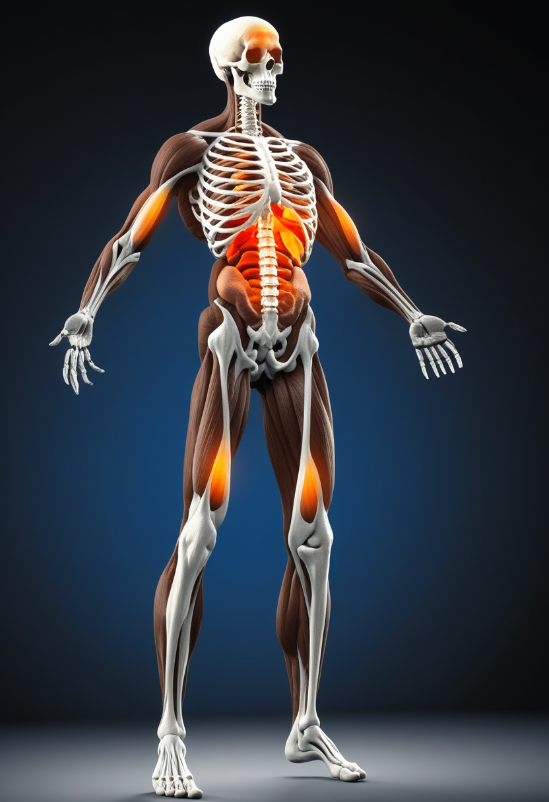
Scholar Rock社のアピテグロマブ（抗潜在型ミオスタチン抗体）がFDA BLA再提出受理を完了し、PDUFAは2026年9月30日に確定した。優先審査・希少疾患指定・ファストトラック・希少小児疾患指定の4指定を保持。EMAの欧州承認審査も2026年中旬決定見込みで進行中。「神経を守る」スピンラザ・ゾルゲンスマ・リスジプラムとは異なり「筋肉量と機能を直接高める」初のSMA薬として期待が高い。PDUFAまで91日。
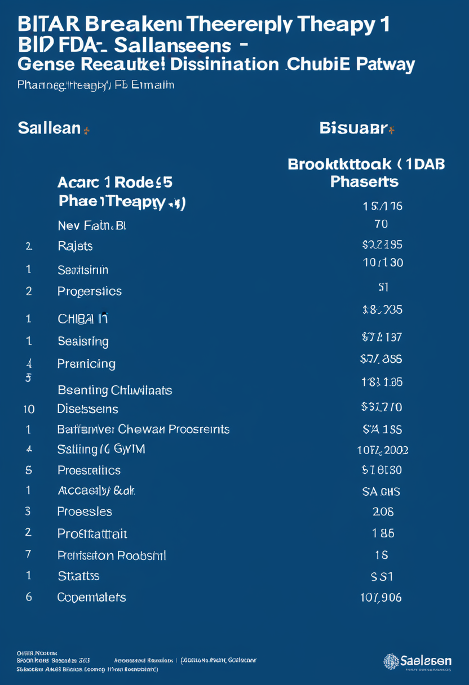
BiogenのBIIB115（salanersen）は6月4日取得のFDA突破口療法指定に続き、Phase 1初期データ発表が2026年11月を目標とする。遺伝子治療後も進行するSMAを対象とした次世代アプローチ。一方Roche/ChugaiのGYM329（emugrobart）はMANATEE試験でアウトカム不十分と判定され開発中止（Chugai 3/23、Roche 6/27確認）。ミオスタチン経路を狙う競合が撤退し、Scholar RockのアピテグロマブとBiogenのBIIB115が異なる機序でSMA治療の第2軸を争う構図が鮮明になった。
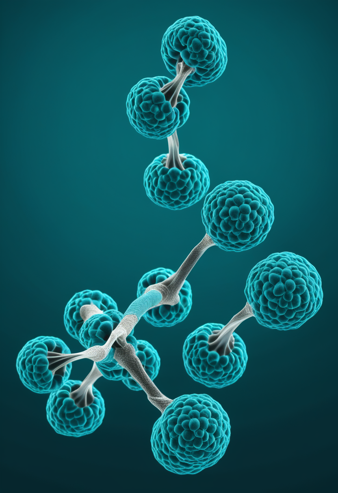
2026年3月30日にFDA承認の高用量ヌシネルセン新レジメン（ローディング50mg×2回→維持28mg/4か月）は、EU・日本・スイスでも承認が完了。Phase 2/3 DEVOTE試験でCHOP-INTEND平均+26.19点改善（マッチ対照比）を示した。既存患者の高用量への切り替えと新規患者への高用量開始が選択肢に加わり、ヌシネルセン治療が最適化された。アピテグロマブPDUFA（9/30）と組み合わせた「神経+筋肉の同時アプローチ」の将来像も検討が始まっている。
PDUFA91日のアピテグロマブ、11月Phase 1データのBIIB115、GYM329撤退の三連動。高用量スピンラザを基盤に「守る+取り戻す」の組み合わせ治療が2026年Q4に焦点を結ぶ。
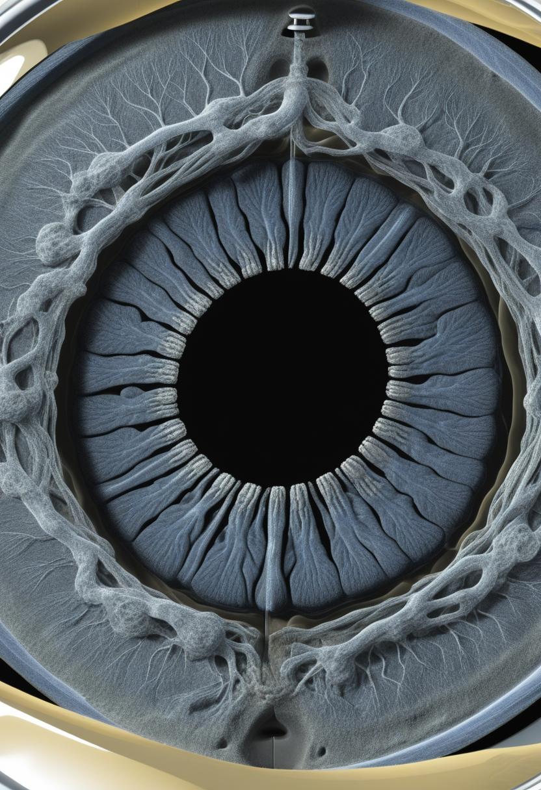
Synchron社とメルボルン大学の共同研究（arXiv 2506.07481）が、ALS患者埋め込みの内血管型Stentrodeで視線サッカード（急速眼球運動）の脳信号デコードに世界初成功。固視 vs. サッカード分類でAUC 0.88（セッション内）・0.86（セッション間）を達成し、4方向サッカード判別でもAUC 0.67を記録。「眼球運動の50ms前から脳信号が先行する」ことを内血管BCIで初実証。視線制御とBCIが統合する新しい Human-Machine Interface の概念実証として、Tobii等の視線入力と脳波が融合する未来が開きつつある。
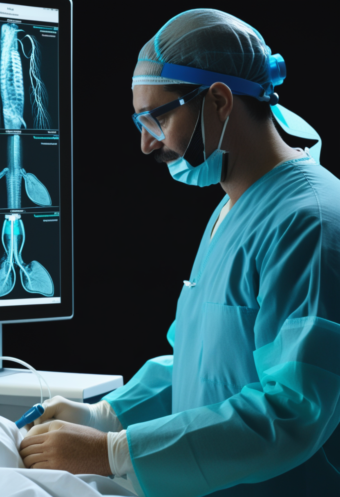
Synchron社は2026年中に初のFDA承認BCI（PMA）を目指すピボタル試験を準備中。シリーズD 2億ドルを調達し、COMMAND試験の12か月安全エンドポイントを達成済み。ALS患者がiPhone・Apple Vision ProをStentrodeで直接思考操作した実績を商業フェーズへの橋頭堡とし、今回のサッカードデコード成功で「眼球運動の制御」も視野に入った。Neuralinkとは異なる開頭不要・内血管アプローチで商業化競争の重要局面を迎える。
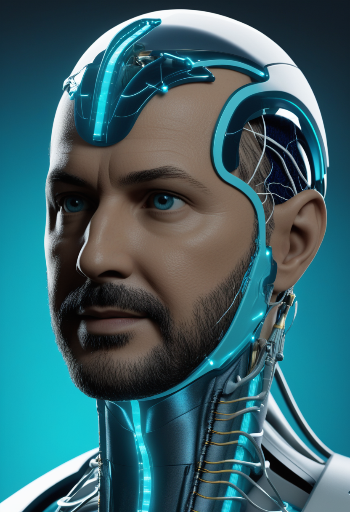
Neuralink社は2026年中の「高量産」体制移行と完全自動化手術ルーティンを実施予定。デバイススレッドが硬膜を貫通する新設計で侵襲性が低下し、シリーズE 6.5億ドルを追加調達。音声復元デバイスがFDA「ブレークスルー機器指定」を取得し、ALS患者の発話補助機能強化が加速中。Synchronのサッカードデコードと合わせて「意思疎通の復元」という共通ゴールに向けた内血管型 vs. 開頭型の技術競争が2026年下半期に加速する。
Synchronの「脳が目より50ms速い」発見とFDAピボタル試験準備が重なった転換点。Neuralinkの量産宣言と合わせ、2026年下半期はBCIが試験段階から製品化段階へ移行する元年になりうる。
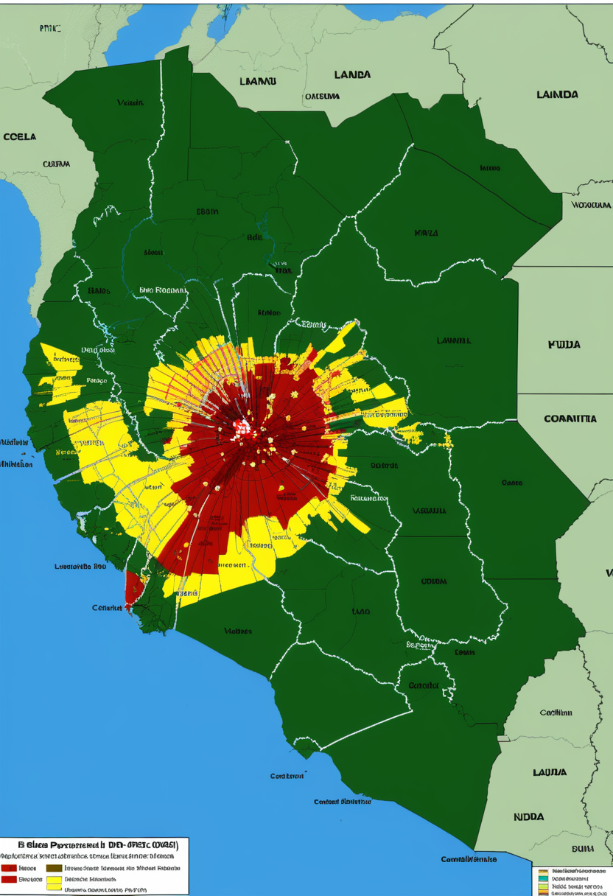
PHEIC継続中のエボラ出血熱（ブンディブギョ型）は6月29日、DRC国内でHaut-Uéléへの拡散が新たに報告され、Ituri・Nord-Kivu・Sud-Kivu・Haut-Uéléの4州に拡大した。6月25日時点の累計は1,155例・304死者。国際輸入例はフランス（6/24確認）・ドイツ（5/19）の計2件。有効なワクチン・治療薬がない中、第4州への拡散はPHEIC下の地理的封じ込め戦略に新たな課題を突きつける。The Lancet（6/25）の確率論的モデルは南スーダン37.5%・ウガンダ79.9%の越境リスクを警告しており、第4州拡散がこの確率をさらに押し上げる可能性がある。
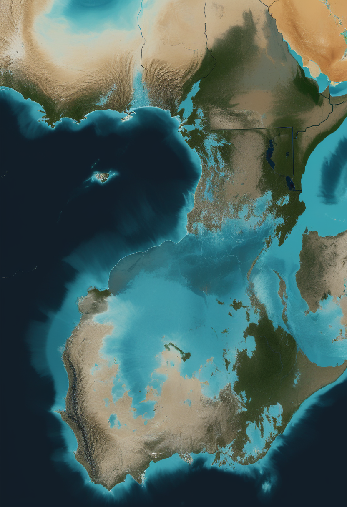
マダガスカルでmpoxクレードIbの感染拡大が継続し、6月30日時点で2,117例超に到達した。エボラPHEIC継続下のアフリカで感染症の複合危機が深刻化している。WHO One Responseが6〜11月の対応計画を実施中。クレードIbは一般接触による感染も報告されており封じ込めの難易度が高い。東アフリカの医療体制がエボラ対応で手薄になる中での同時流行が懸念される。
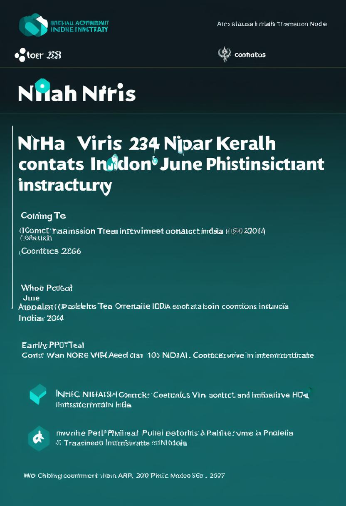
ケーラ州のNipahウイルス症例への接触者追跡104名が6月23日時点で全員陰性を維持（WHO DON-609）。早期検出・完全接触追跡・ICU隔離の3本柱が、エボラPHEIC並行という最も過酷な負荷の時期に封じ込め成功を実現しつつある。致死率40〜75%の危険な病原体を前に、インドの公衆衛生インフラが国際的対応能力を示す事例として記録される可能性がある。
エボラの第4州拡散、マダガスカルmpox Ib継続、インドNipah封じ込め成功の三様が同時進行。アフリカの二重感染症危機と南スーダン越境リスクが今後の最重要監視点。
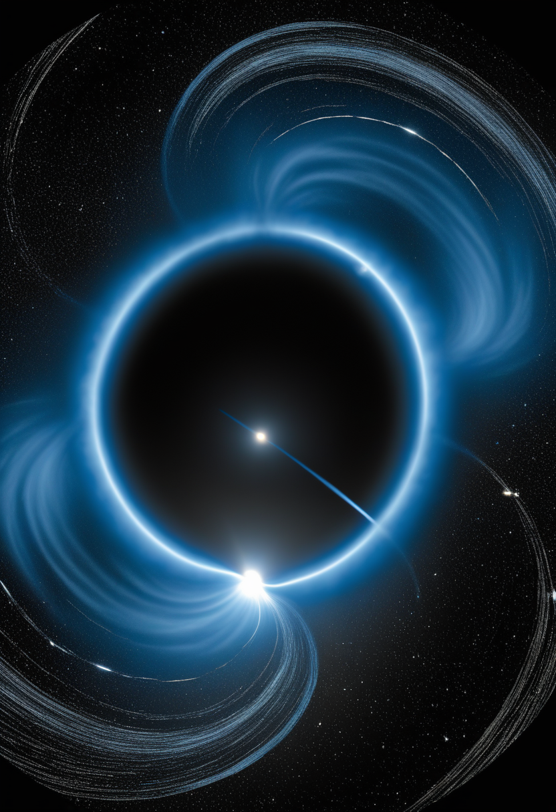
2026年6月29日、CERNのLarge Hadron Collider（LHC）がRun 3を終了し第3次長期停止（LS3）に入った。約4年間の停止中に1.2kmを超えるマグネットと部品を換装し、高輝度LHC（HL-LHC）へ移行する。HL-LHCのルミノシティは現LHCの約10倍で、ATLAS・CMS実験も事実上全面刷新。Run 3で観測された4σ逸脱の確認を含む新物理探索能力が飛躍的に向上する。2030年の再稼働まで標準モデルを超える物理学の新章への扉が静かに閉じ、4年後に開く。
NASAのJWSTが2026年6月22日、恒星形成領域として知られる巨大分子雲「オリオン座A」の詳細画像を公開。低質量星が誕生する霧状の星間物質が鮮明に描写され、星形成の多様なプロセス理解に貢献する。JWSTの分子雲観測シリーズの最新成果で、太陽系形成と類似の環境下で何が起きているかを直接観測する機会として、惑星系誕生のメカニズム解明に一歩近づく。
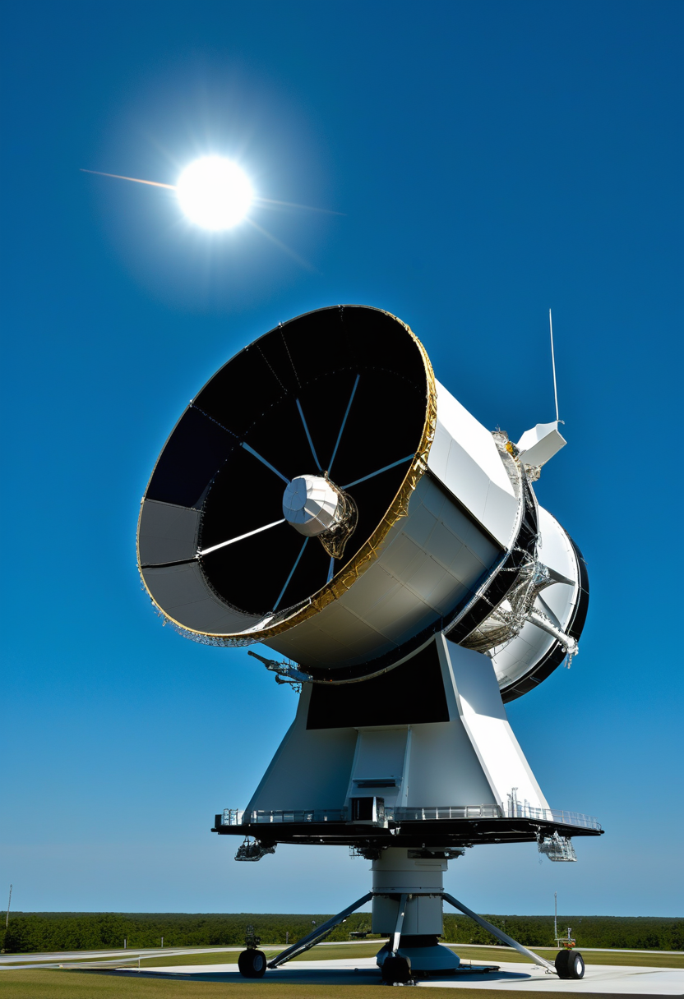
NASAのNancy Grace Roman宇宙望遠鏡が2026年6月21日にKSCへ到着し、最終打ち上げ前整備が開始された。打ち上げ日は2026年8月30日に確定。ハッブル望遠鏡の100倍以上の視野を持つ次世代ワイドフィールド望遠鏡で、暗黒エネルギー・系外惑星・宇宙論的調査を担う。CERN LS3突入と同時期に「地上の粒子加速器」が沈黙し「宇宙の望遠鏡」が新たに飛び立つという天地の世代交代が象徴的。
LHCが4年の沈黙に入る同週にロマン望遠鏡が8/30打ち上げへ最終準備。地上の素粒子実験と宇宙観測のバトンが渡る形で、2026年下半期は物理学インフラの大更新期を迎える。
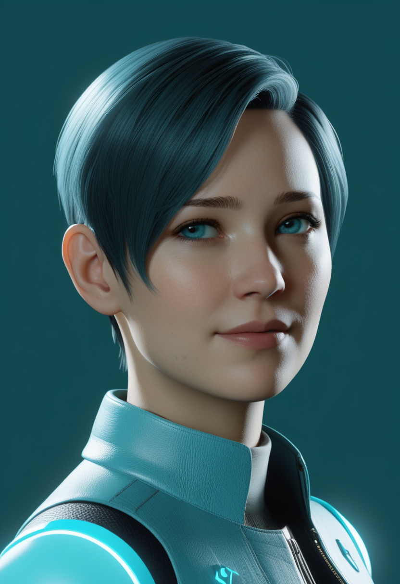
arXiv 2506.23826「Toward the Digital Me: A vision of authentic Conversational Agents powered by personal Human Digital Twins」（2026年6月）が個人デジタルツイン会話AIの新枠組みを提案。個人のジャーナリングや行動データから「その人らしく応答する」会話AIエージェントを構築し、デジタルツインを「認知拡張の相棒」として機能させるビジョンを示す。「誰のために、誰として話すか」というAIエージェントのアイデンティティ問題に正面から取り組む先端研究。
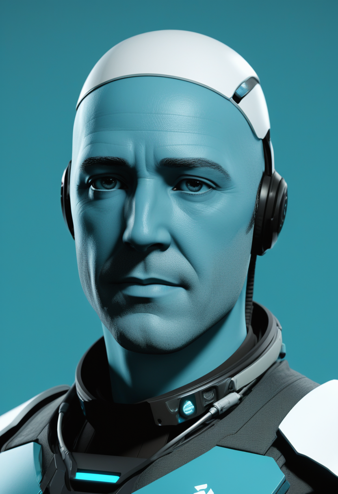
Springer Nature AI & Society誌「Avatar beyond replication: digital human thought twins as co-creators through AI mind design」（2026年）。デジタルアバターが単なる複製を超え、東洋・西洋の哲学的枠組みを援用した「思考の共創パートナー」へ進化する論理を展開。デジタルツインの主体性と倫理的課題（誰が「私」を代理するか）を学術的に整理。AI意識・デジタル同一性の倫理議論が実装の問いと重なる時代に入っている。
Singularity Hubが「How to Build Better Digital Twins of the Human Brain」を特集（2026年4月11日）。個人化された脳・身体デジタルツインが神経疾患の薬物反応シミュレーションや神経刺激応答予測に応用されつつあると報告。arXiv「デジタル私」論文・Springer思考ツイン論文と合わせ、全脳エミュレーション（WBE）基盤技術の整備が哲学的フレームワークと実装の両面から急速に収束しつつある。「脳のデジタルコピー」が医療ツールとして機能する日が近づいている。
「デジタル私」論文・Springer思考ツイン・Singularity Hub脳デジタルツインの三つが異なる角度から同じ問いを照らす。2026年下半期は「AIが誰として話すか」「脳のどこまでをコピーできるか」が医療と哲学の共通テーマに浮上する。
本日2026年7月1日、CERNのLHCはLS3に入り4年の沈黙を選んだ。エボラは第4州へ拡散を続け、SMA治療は承認の最終直線を走る。Synchronが「脳が目より50ms速い」ことを証明した日に、Neuralinkは量産へ向かった。「デジタル私」という問いを複数の論文が同時に問い始めた。これらは別々の出来事ではなく、人間が自分自身の限界を再定義しようとしている、同じ一つの動きの断面かもしれない。
では、また明日の朝に。 — JaH